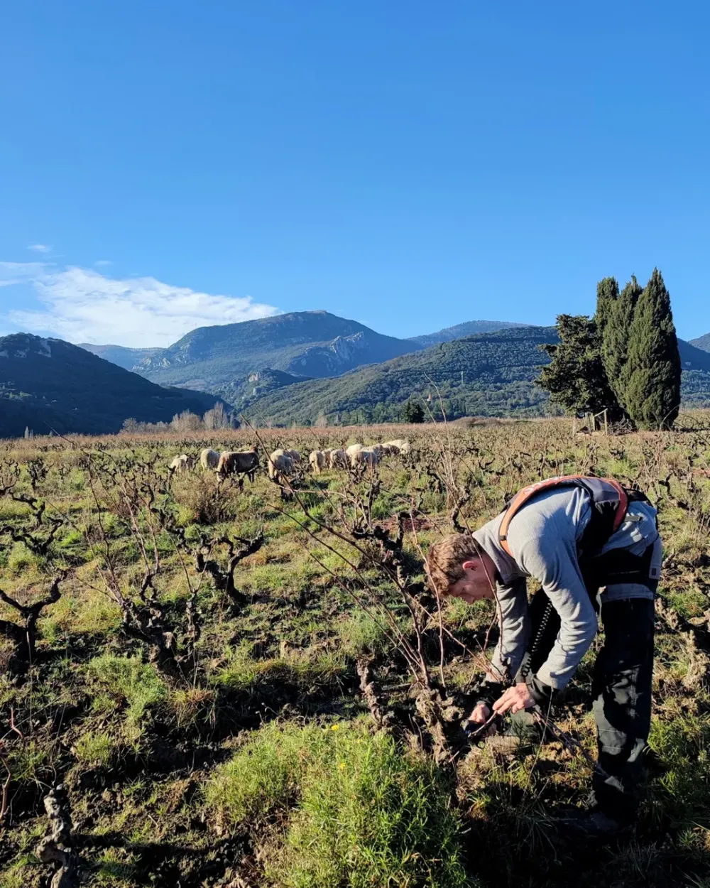
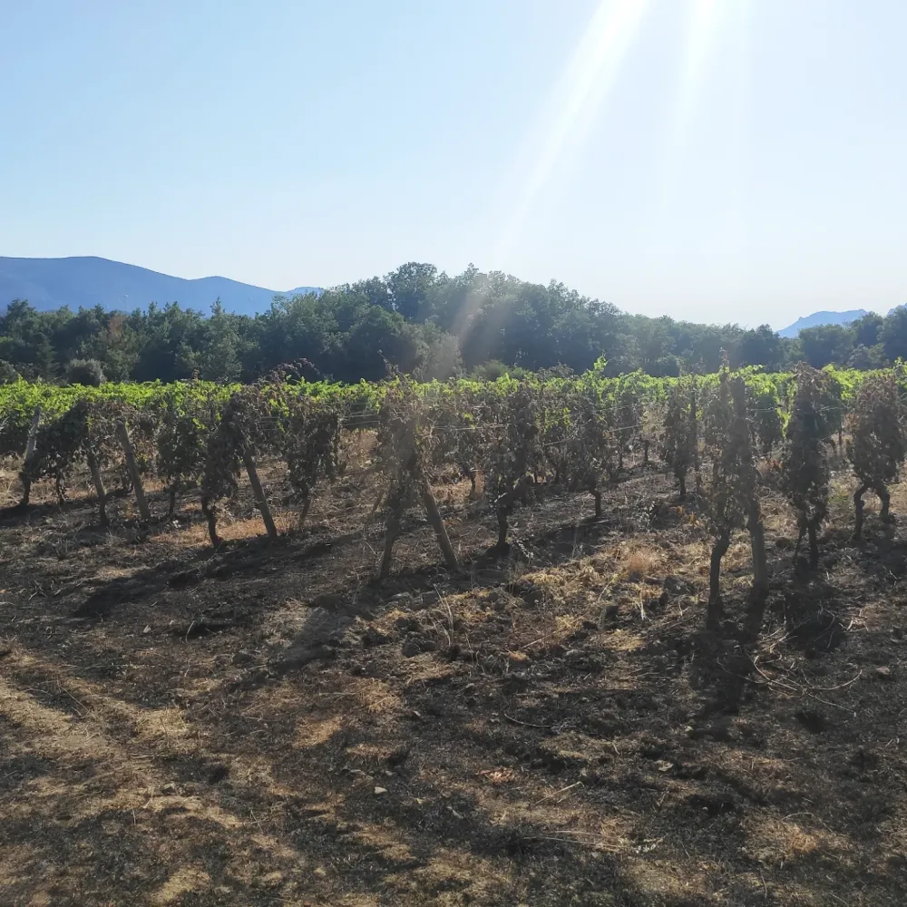
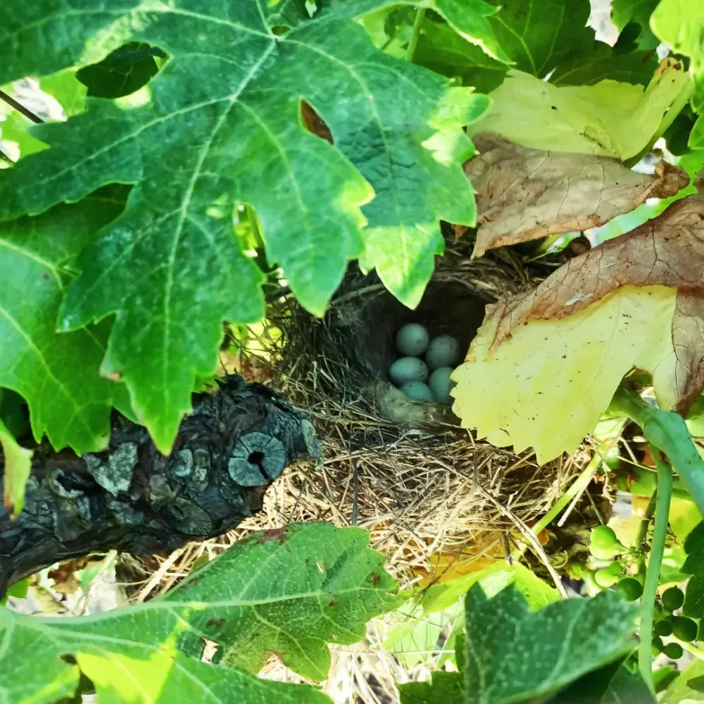
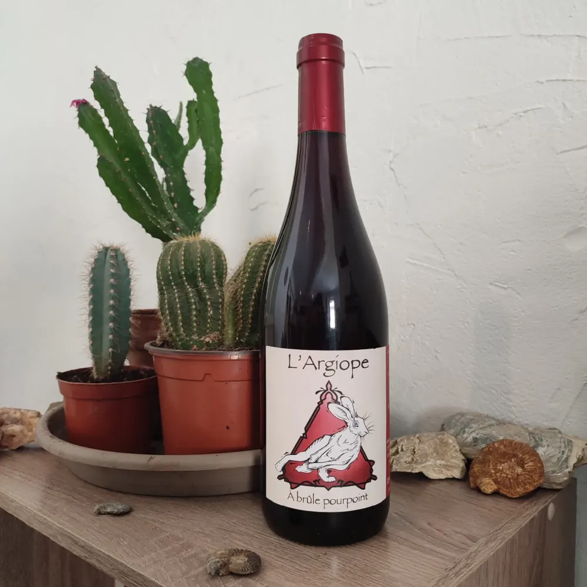

DomaineL'argiope
Vins libres de vieilles vignes, à Caudiès-de-Fenouillèdes.
- 6,5 ha
- de vignes
- 400 m
- d'altitude
- 2023
- première cuvée

Notre histoire
Paul Bezert s'est installé en 2023 à Caudiès-de-Fenouillèdes, au nord-ouest de la vallée de l'Agly. Le Fenouillèdes, c'est l'Occitanie du pays catalan : on y parlait occitan quand le reste du Roussillon parlait catalan. On dit aussi qu'il y pleut un peu plus qu'ailleurs… c'est faux.
Formé auprès de Loïc Roure au Domaine du Possible, Paul travaille 6,5 hectares de vignes à 400 m d'altitude, sur des marnes schisteuses, dans un cadre préservé et sauvage. La cave est installée à Saint-Martin.
Loin des circuits touristiques, le domaine propose une balade dans les vignes suivie d'une dégustation, à réserver sur Viny'aqui, pour découvrir le travail du vigneron au fil des saisons et des cépages.

Nos engagements
Les vignes sont conduites en agriculture biologique, en laissant toute sa place à la vie sauvage : oiseaux, insectes et moutons partagent les parcelles. Au chai, tout est vinifié en grappes entières, sans soufre pendant la vinification : seulement 10 mg/l à la mise en bouteille.
- À la vigne Agriculture biologique, moutons et vie sauvage entre les rangs.
- Au chai Vinification en grappes entières.
- Soufre Aucun pendant la vinification, 10 mg/l à la mise en bouteille.

Pourquoi l'argiope ?
L'argiope frelon (Argiope bruennichi) est une araignée rayée de jaune, de noir et de blanc, que l'on croise l'été dans les herbes hautes, entre les rangs de vigne. Malgré ses airs de guêpe, elle est totalement inoffensive pour l'homme.
Sa signature : un ruban de soie en zigzag tissé au centre de sa toile, le stabilimentum. On le croit utile pour attirer les insectes, ou pour éviter que les oiseaux ne foncent dans la toile. Son nom vient d'Argiope, une nymphe de la mythologie grecque.
Elle ne s'installe que là où l'herbe pousse et où les insectes abondent : la voir dans les vignes, c'est le signe d'un sol vivant. C'est elle qui a donné son nom au domaine.
Nos cuvées

À brûle pourpoint
La première cuvée du domaine : carignan de vieilles vignes et syrah, pour un rouge léger et expressif, aux arômes de fruits rouges mûrs et d'épices, aux tanins soyeux.
Servir autour de 16 °C, idéalement carafé une demi-heure avant. Parfait avec un gigot d'agneau aux herbes ou un magret de canard.
La gamme
- Rouge Carignan & syrah
- Rouge Syrah & macabeu
- Rouge Lledoner pelut & carignan
- Blanc 100 % macabeu
- Rosé 100 % syrah
Balade et dégustation
Une balade guidée dans les vignes, loin des sentiers battus, pour découvrir le travail du vigneron au fil des saisons, suivie d'une dégustation des vins du domaine. La visite se déroule toujours en deux temps :
- Dans les vignes Une promenade à travers les parcelles pour parler du terroir, des cépages, de la conduite de la vigne et de la vie sauvage qui partage les rangs.
- Au domaine Une dégustation des vins du domaine, pour retrouver dans le verre ce que l'on vient de voir dans les vignes.
Choisissez votre date dans le calendrier.
Envie de découvrir nos vins ? Réservez votre expérience œnotouristique en ligne.
Réserver sur Viny'aquiContact
- Vigneron
- Paul Bezert
- Téléphone
- 06 29 38 73 57
- contact@largiope.fr
- Adresse
- 66220 Caudiès-de-Fenouillèdes
Nous trouver
La carte Google Maps est désactivée tant que vous n'avez pas accepté les cookies.
Ouvrir dans Google Maps